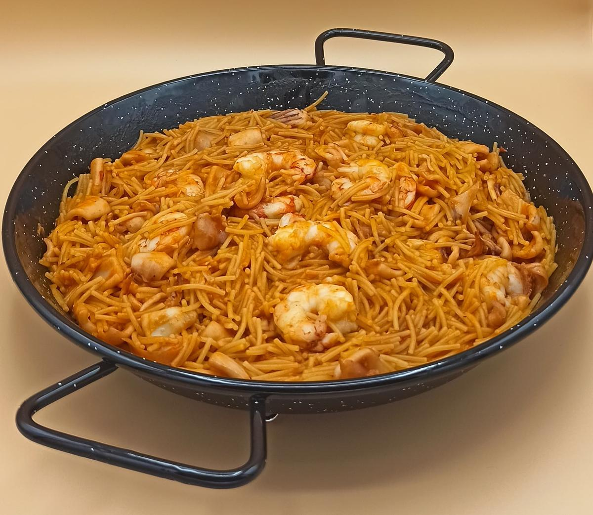
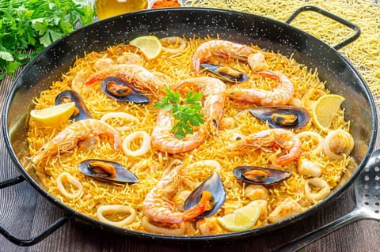
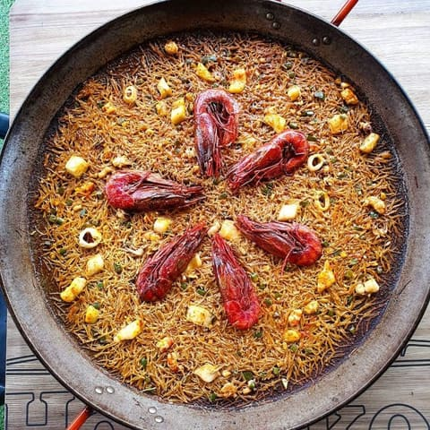
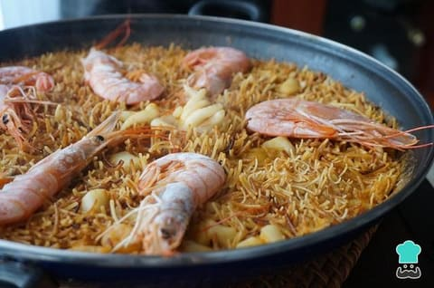

Fideuà
El plat estrella de la costa valenciana. Una alternativa als fideus amb el sabor intens del mar, cuinada en paella i acompanyada d'allioli casolà.
- Temps: 45 minuts
- Dificultat: Mitjana
- Persones: 4
Ingredients
- 400g de fideus del número 2
- 300g de gambes fresques
- 300g de musclos
- 200g de calamars en anelles
- 1 ceba gran
- 2 tomàquets madurs ratllats
- 3 grans d'all
- 1 litre de brou de peix
- Oli d'oliva verge extra
- Safrà, sal i pebre
Elaboració
Escalfa l'oli en una paella gran a foc mitjà. Sofregeix la ceba picada fina fins que quedi transparent, uns 8 minuts. Afegeix els grans d'all laminats i deixa'ls daurar lleugerament. Incorpora el tomàquet ratllat i cuina el sofregit a foc baix durant 15 minuts fins que perdi tota l'aigua i quedi ben concentrat.
Afegeix els calamars al sofregit i cuina'ls 5 minuts. Incorpora els fideus i remena bé perquè s'impregnin dels sabors. Tosta'ls lleugerament durant 2 minuts fins que agafin un color daurat. Aquest pas és clau per aconseguir el sabor característic de la fideuà.
Aboca el brou de peix calent, el safrà dissolt en una mica de brou, sal i pebre. Cuina a foc fort els primers 5 minuts i després baixa el foc. Afegeix les gambes i els musclos els últims 5 minuts de cocció. Deixa reposar 2 minuts fora del foc i serveix amb allioli casolà.
Pas a pas en imatges



Valors nutricionals
Per porció (1 ració):
| Nutrient | Quantitat | % CDR |
|---|---|---|
| Calories | 420 kcal | 21% |
| Carbohidrats | 52g | 20% |
| Greixos | 12g | 17% |
| Proteïnes | 28g | 56% |
| Fibra | 3g | 12% |
Consells del xef
- Els fideus: Utilitza fideus del número 2, ni massa fins ni massa gruixuts. Els fideus en forma de niu no són adequats per a aquest plat.
- El brou: Un bon brou de peix casolà marca la diferència. Si no en tens, un brou de qualitat comprat al supermercat també funciona.
- El sofregit: No tinguis pressa amb el sofregit. Com més temps el cuines a foc lent, més saborosa quedarà la fideuà.
- L'allioli: Serveix sempre amb allioli casolà. És l'acompanyament tradicional i complementa perfectament el sabor del marisc.